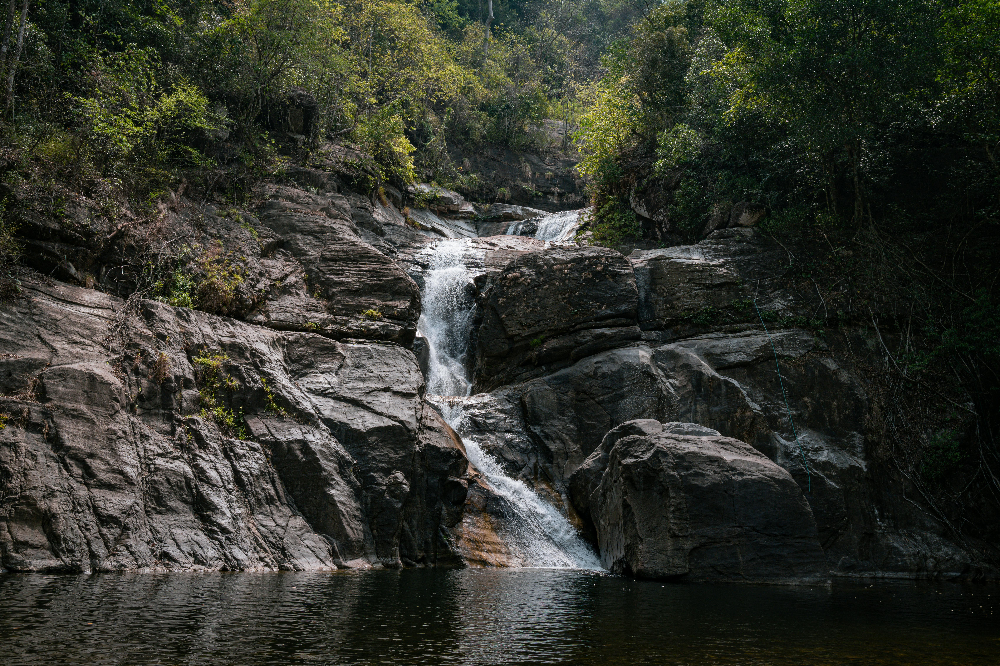

Named for its unique Bo-leaf shape, this spectacular waterfall is a sacred and natural treasure of the Sabaragamuwa province.
Bopath Ella is one of the most uniquely shaped and visually stunning waterfalls in Sri Lanka. Situated in the Ratnapura district, its silhouette closely mimics the shape of a "Bo" leaf (the sacred fig leaf), making it both a natural wonder and a site of cultural intrigue. The waterfall cascades down about 30 meters, creating a powerful and rhythmic sound that fills the surrounding lush jungle.
The area around the falls is a popular picnic and swimming spot for families, offering a peaceful escape from the busy town centers. Exploring the paths leading to the falls provides a deeper connection to the island's high-altitude wilderness and timeless beauty. It's an experience that transitions seamlessly from the energy of the roar to the serenity of the misty spray, showcasing the true essence of Sri Lanka's natural landscape.
Back to Ratnapura Hub